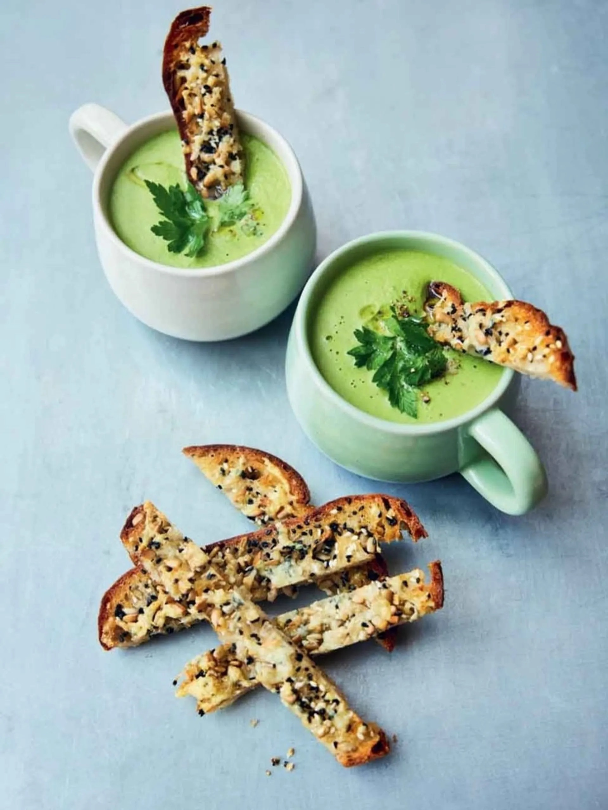

Home
Broccoli Soup

Description:
This air fryer broccoli soup is paired with cheesy soldiers, offering a tasty and nutritious meal.
The crispy soldiers add a satisfying crunch to the creamy, wholesome soup.
It’s a quick, simple dish perfect for a cozy lunch or dinner.
For a delicious, vegetarian meal with minimal effort, this recipe is a great choice.
Ingredients:
- 400g frozen broccoli
- 4 spring onions
- olive oil
- 20g mixed seeds, such as sunflower, pumpkin, linseeds, poppy
- 1 large slice of bread (100g)
- 80g Cheddar cheese
- 1 organic veg stock cube
- 1 bunch of flat-leaf parsley (30g)
- optional: extra virgin olive oil
Steps:
This is a 2-drawer air fryer recipe.
- Remove the shelf from the large air-fryer drawer, chuck in the broccoli,
then trim, roughly chop and add the spring onions, drizzle with 1 tablespoon of olive oil,
season with sea salt and black pepper and toss well. Cook for 15 minutes at 200°C,
or until the broccoli is soft, shaking the drawer occasionally.
- Use your fingertips to press the seeds into the surface of the bread, drizzle with 1 teaspoon of oil
and grate over a layer of cheese. Cook in the small drawer for 7 minutes at 180°C, or until golden and
crisp, then slice.
- Once the broccoli is soft, remove the drawer from the air fryer, grate in the remaining cheese, crumble
in the stock cube, tear in most of the bunch of parsley, stalks and all, and pour over 400ml of boiling kettle water.
- Carefully blitz with a hand blender until smooth, adding an extra splash of water, if needed. Season to perfection,
then gently return the drawer and cook for 5 minutes at 180°C, or until piping hot.
- Divide between mugs or bowls, pick over the remaining parsley, and drizzle with a little extra virgin olive oil,
if you like. Serve with the soldiers.